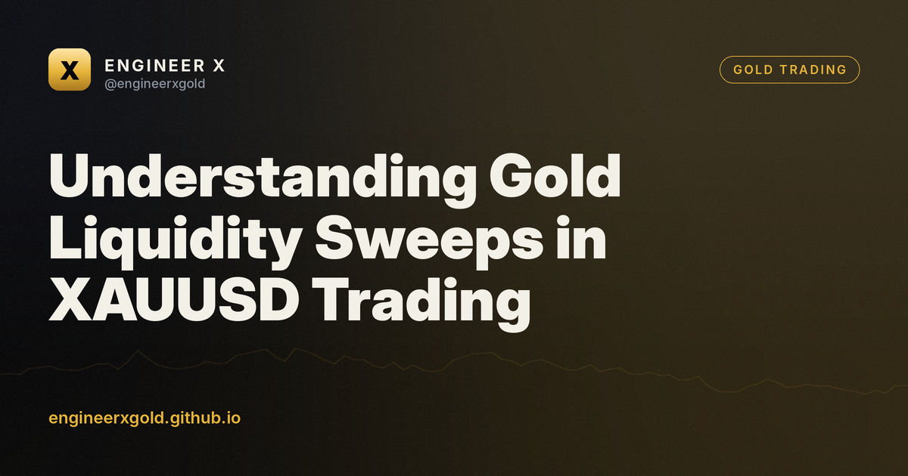

Understanding Gold Liquidity Sweeps in XAUUSD Trading

A gold liquidity sweep occurs when price temporarily breaks a clear swing high or low to trigger resting stop-loss orders before reversing direction. This movement allows larger market participants to fill large orders against retail liquidity. Recognizing this pattern helps you avoid entering premature breakouts on the XAUUSD chart.
Key takeaways
- Liquidity sweeps occur when price spikes past swing highs or lows to trigger resting orders.
- Look for rapid rejection wicks rather than strong candle closes to identify potential sweeps.
- Define clear stop-loss placement beyond the sweep extreme to manage unexpected momentum.
- Validate your analysis by observing whether price sustains acceptance beyond the broken level.
What is a liquidity sweep in gold trading?
Retail traders often place stop-loss orders just beyond obvious chart levels, such as daily highs, daily lows, or double tops. In liquid markets like XAUUSD, price frequently spikes past these technical barriers. This sudden burst of movement is known as a liquidity sweep.
Instead of signaling a strong continuation of the breakout, these spikes often trap breakout traders. Large institutional orders require deep liquidity to fill efficiently. These resting retail orders provide the necessary volume for institutions to execute their positions.
Understanding this dynamic shifts your perspective on market structure. Rather than viewing a broken high as instant strength, you begin to watch how price behaves immediately after crossing that threshold. Rejection candles often follow these sweeps.
Why does XAUUSD frequently experience liquidity runs?
Gold attracts high retail participation across global sessions, particularly during the London and New York overlaps. This high concentration of individual traders leads to predictable placement of stop losses and breakout entries around key technical levels.
Furthermore, gold often consolidates in tight ranges before major macroeconomic data releases. These consolidation zones build up substantial pools of resting liquidity on both sides of the range. Market participants frequently target these pools to fuel subsequent moves.
Algorithmic execution models also scan for clusters of retail stops. When price approaches these clusters, algorithms can trigger rapid price expansion to clear the book. This technical behavior is a core component of both Volume Spread Analysis and Smart Money Concepts.
🎁 Try our VIP group free for 7 days
Daily XAUUSD zones before London, live signals with entry zone, stop and targets, and every result posted — wins and losses. No card, no payment.
How to identify a potential liquidity sweep setup
The first step is locating clear swing points on higher timeframes, such as the one-hour or four-hour charts. Look for equal highs or equal lows where many market participants likely have resting orders. These levels act as magnets for price.
Next, observe the price action as gold approaches these levels. A genuine breakout usually features sustained momentum and closes beyond the level with strong volume. Conversely, a sweep often shows a rapid spike through the level followed by an equally swift rejection back inside the range.
Pay attention to the speed of the move. Sweeps are often characterized by fast, aggressive wicks on the candle chart rather than clean, body-led closes. This rejection wick indicates that buyers or sellers failed to sustain acceptance beyond the key level.
Hypothetical XAUUSD example with stop and invalidation
Consider a hypothetical scenario where XAUUSD has formed a clear double top at 2050.00 over the Asian session. Many retail breakout traders buy the break above 2050.00, placing stop losses just underneath the recent minor consolidation. Meanwhile, short sellers place stops right above 2052.00.
During the early London session, price spikes sharply to 2053.50, triggering the buy stops and trapping early breakout buyers. However, the candle quickly rejects this high and closes back below 2050.00 on the 15-minute chart. This behavior suggests a bearish liquidity sweep rather than a sustained upside continuation.
A trader monitoring this hypothetical setup might look for short entries after the rejection is confirmed. For risk management, a logical stop-loss placement would sit safely above the sweep high, perhaps at 2054.50. The trade setup is invalidated if price breaks cleanly and holds above 2054.50 with strong bullish momentum, proving the initial breakout was genuine.
Managing risk when trading around sweep levels
Trading liquidity sweeps involves trading against the immediate momentum of the breakout spike. Because you are fading a move, defining your invalidation point beforehand is essential. If price does not reverse as expected, you must accept a controlled loss.
Never risk a fixed percentage of your account that exceeds your personal risk tolerance. Gold can experience rapid volatility spikes during news events, which can cause slippage on stop-loss orders. Position sizing should reflect this inherent market volatility.
Keep a trading journal to track how often you spot valid sweeps versus simple trend continuations. Analyzing your historical execution data helps you refine your ability to distinguish between a genuine market shift and a temporary stop hunt.
FAQ
Are liquidity sweeps unique to gold?
No, liquidity sweeps occur in all liquid financial markets, including major currency pairs and indices, wherever retail stop-loss orders cluster.
Do I need special indicators to spot a sweep?
No indicators are strictly necessary. Basic candlestick charts, swing point identification, and volume observation are sufficient to spot potential sweep behavior.
What timeframe is best for analyzing gold liquidity sweeps?
Traders typically use higher timeframes like the one-hour and four-hour charts to find key levels, and lower timeframes like the 15-minute chart to observe the actual sweep and rejection.
🎁 Try our VIP group free for 7 days
Daily XAUUSD zones before London, live signals with entry zone, stop and targets, and every result posted — wins and losses. No card, no payment.
Free gold entry checklist · Today's XAUUSD zones
Keep learning
- XAUUSD Entry Confirmation: How to Trade Gold with ICT
- Stop loss ke baghair trading = ticket bina safar
- Mastering Gold Support and Resistance for XAUUSD Trading
How this lesson was made: drafted with AI assistance from our trading rule book and checked automatically against our compliance rules (no profit promises, no invented results). Examples are hypothetical. Education only, not financial advice. Editorial policy.